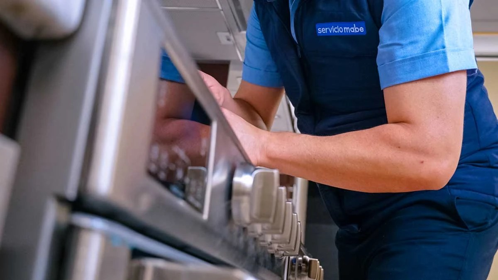

Artículos escritos a partir de las fallas y dudas más frecuentes que vemos en nuestras visitas por San Salvador, El Salvador.

No todo ruido de refrigeradora es una falla grave. Te explicamos qué sonidos son normales y cuáles son señal de que necesitas revisión técnica pronto.
Leer artículo
La humedad de El Salvador favorece el moho y los malos olores en las lavadoras. Esta guía práctica te muestra qué revisar cada mes y cada seis meses.
Leer artículo
No toda falla justifica comprar una refrigeradora nueva. Te damos una guía objetiva basada en la edad del equipo y el tipo de reparación necesaria.
Leer artículo
Los picos de voltaje al restablecerse la energía son una de las causas más frecuentes de daño en tarjetas de control. Esto es lo que puedes hacer para reducir el riesgo.
Leer artículo
Cada vez más estudios y apartamentos de un cuarto en la ciudad usan torres de lavado. Te explicamos sus ventajas reales y qué mantenimiento necesitan.
Leer artículo
Una mala instalación es la causa de muchas fallas "prematuras" que en realidad se pudieron evitar. Esta checklist cubre lo esencial antes de conectar un equipo nuevo.
Leer artículo
La torre Mabe es el electrodoméstico que más reparaciones pide en El Salvador. Aquí explicamos, síntoma por síntoma, qué la está dañando y qué esperar de la reparación.
Leer artículoUn olor a gas cerca de la cocina no se debe ignorar ni intentar resolver por cuenta propia. Esta guía explica los pasos de seguridad correctos y qué suele causar la fuga.
Leer artículo
Ya sea un horno empotrado o el horno de tu cocina, estas son las causas más comunes de que no caliente bien o cocine desparejo, y qué esperar de la reparación.
Leer artículo